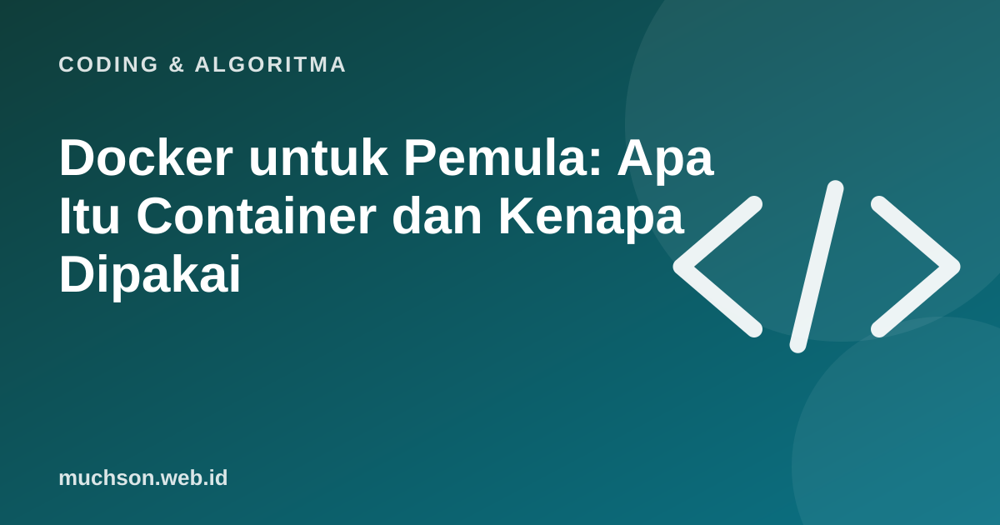

Beranda › Artikel › Coding & Algoritma
Coding & AlgoritmaDocker untuk Pemula: Apa Itu Container dan Kenapa Dipakai
"Di komputer saya jalan kok." Kalimat yang paling sering diucapkan developer, dan penyebab banyak sakit kepala. Docker menyelesaikannya dengan membungkus aplikasi bersama semua yang dibutuhkannya ke dalam satu paket yang berjalan sama di mana pun.

Analogi kontainer pengiriman
Pelabuhan modern memakai kontainer standar: apa pun isinya, kontainer bisa diangkut kapal, truk, atau kereta tanpa dibongkar. Docker melakukan hal serupa untuk perangkat lunak. Aplikasi, pustaka, dan konfigurasinya dikemas, lalu bisa dijalankan di laptop, server, atau cloud dengan perilaku yang sama.
Tiga istilah utama
Contoh Dockerfile sederhana
FROM python:3.12-slim
WORKDIR /app
COPY requirements.txt .
RUN pip install -r requirements.txt
COPY . .
CMD ["python", "app.py"]# bangun image dan jalankan
docker build -t aplikasi-saya .
docker run -p 8000:8000 aplikasi-sayaKapan Docker berguna?
- Lingkungan pengembangan yang sama untuk seluruh tim.
- Menjalankan database atau layanan pendukung tanpa memasang manual.
- Deploy ke server atau cloud dengan perilaku yang dapat diprediksi.
- Mengisolasi beberapa aplikasi di satu mesin.
Keamanan
Jangan menaruh kunci rahasia di dalam image atau Dockerfile. Berikan lewat variabel lingkungan atau pengelola rahasia saat container dijalankan.
Tanya jawab
Apakah Docker sama dengan mesin virtual?
Mirip tujuannya (isolasi), berbeda cara kerjanya. Container lebih ringan karena berbagi kernel sistem operasi.
Apakah pemula perlu belajar Docker?
Tidak di tahap paling awal. Berguna setelah Anda membuat aplikasi yang perlu dijalankan di tempat lain atau bekerja dalam tim.
Apa itu Docker Compose?
Alat untuk mendefinisikan dan menjalankan beberapa container sekaligus, misalnya aplikasi dan database, lewat satu berkas konfigurasi.